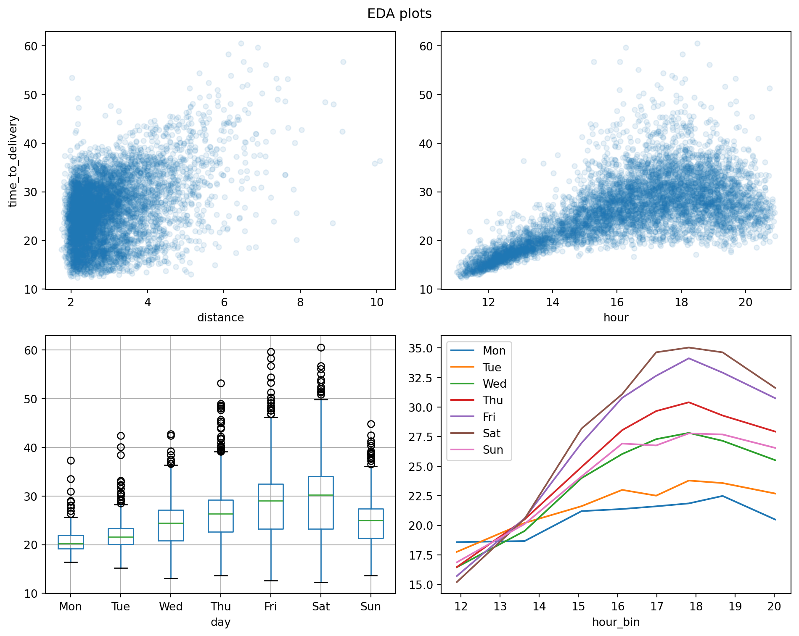

import sklearn
import pandas as pd2 The Whole Game
This chapter on the main website is a high-level tour of the modeling process. We’ll follow the same pattern here by analyzing the same data. But in Python!
Let’s run some code to get started:
Load data
deliveries = pd.read_csv("data/deliveries.csv", index_col=0)
deliveries.head()| time_to_delivery | hour | day | distance | item_01 | item_02 | item_03 | item_04 | item_05 | item_06 | ... | item_18 | item_19 | item_20 | item_21 | item_22 | item_23 | item_24 | item_25 | item_26 | item_27 | |
|---|---|---|---|---|---|---|---|---|---|---|---|---|---|---|---|---|---|---|---|---|---|
| 1 | 16.1106 | 11.899 | Thu | 3.15 | 0 | 0 | 2 | 0 | 0 | 0 | ... | 0 | 0 | 0 | 0 | 0 | 0 | 0 | 0 | 0 | 0 |
| 2 | 22.9466 | 19.230 | Tue | 3.69 | 0 | 0 | 0 | 0 | 0 | 0 | ... | 1 | 0 | 0 | 0 | 0 | 0 | 0 | 0 | 0 | 0 |
| 3 | 30.2882 | 18.374 | Fri | 2.06 | 0 | 0 | 0 | 0 | 1 | 0 | ... | 0 | 0 | 1 | 0 | 0 | 0 | 1 | 0 | 0 | 0 |
| 4 | 33.4266 | 15.836 | Thu | 5.97 | 0 | 0 | 0 | 0 | 0 | 0 | ... | 0 | 0 | 0 | 0 | 0 | 0 | 0 | 0 | 0 | 1 |
| 5 | 27.2255 | 19.619 | Fri | 2.52 | 0 | 0 | 0 | 1 | 0 | 0 | ... | 0 | 0 | 0 | 0 | 0 | 0 | 0 | 0 | 0 | 1 |
5 rows × 31 columns
pandas provides plotting utilities, wrapping matplotlib:
deliveries['time_to_delivery'].hist(bins=30);TODO: labels, decorations… rug plot maybe?
Data splitting. sklearn’s train_test_split doesn’t support stratifying on a continuous outcome. For now, just assume it’s fine without it.
from sklearn.model_selection import train_test_split
delivery_train_val, delivery_test = train_test_split(deliveries, test_size=0.2, random_state=991)
delivery_train, delivery_val = train_test_split(delivery_train_val, test_size=0.2, random_state=991)More plotting!
from matplotlib import pyplot as plt
delivery_train.plot.scatter(
x='distance',
y='time_to_delivery',
alpha=0.1,
)
plt.show();
delivery_train['day'] = (
delivery_train['day']
.astype('category')
.cat.set_categories(
['Mon', 'Tue', 'Wed', 'Thu', 'Fri', 'Sat', 'Sun']
)
)
delivery_train.boxplot(
column='time_to_delivery',
by='day',
);
Weird automatic title on that box plot. I’m not sure how (whether?) to approach the geom_smooth from the ggplot2 version. TODO subplots.
Oh, do the sklearn html reprs work in quarto?
::: {#cell-sklearn preprocessing pipeline html repr .cell execution_count=7}
from sklearn.compose import ColumnTransformer, make_column_selector
from sklearn.preprocessing import StandardScaler, OneHotEncoder
from sklearn.pipeline import Pipeline
from sklearn.linear_model import LogisticRegression
pipe = Pipeline([
('preproc', ColumnTransformer([
('num', StandardScaler(), make_column_selector(dtype_include='number')),
('cat', OneHotEncoder(), make_column_selector(dtype_include=['object', 'category'])),
])),
('model', LogisticRegression()),
])
pipePipeline(steps=[('preproc',
ColumnTransformer(transformers=[('num', StandardScaler(),
<sklearn.compose._column_transformer.make_column_selector object at 0x0000015F69F4A090>),
('cat', OneHotEncoder(),
<sklearn.compose._column_transformer.make_column_selector object at 0x0000015F7656A910>)])),
('model', LogisticRegression())])In a Jupyter environment, please rerun this cell to show the HTML representation or trust the notebook. On GitHub, the HTML representation is unable to render, please try loading this page with nbviewer.org.
Pipeline(steps=[('preproc',
ColumnTransformer(transformers=[('num', StandardScaler(),
<sklearn.compose._column_transformer.make_column_selector object at 0x0000015F69F4A090>),
('cat', OneHotEncoder(),
<sklearn.compose._column_transformer.make_column_selector object at 0x0000015F7656A910>)])),
('model', LogisticRegression())])ColumnTransformer(transformers=[('num', StandardScaler(),
<sklearn.compose._column_transformer.make_column_selector object at 0x0000015F69F4A090>),
('cat', OneHotEncoder(),
<sklearn.compose._column_transformer.make_column_selector object at 0x0000015F7656A910>)])<sklearn.compose._column_transformer.make_column_selector object at 0x0000015F69F4A090>
StandardScaler()
<sklearn.compose._column_transformer.make_column_selector object at 0x0000015F7656A910>
OneHotEncoder()
LogisticRegression()
:::
Nice.